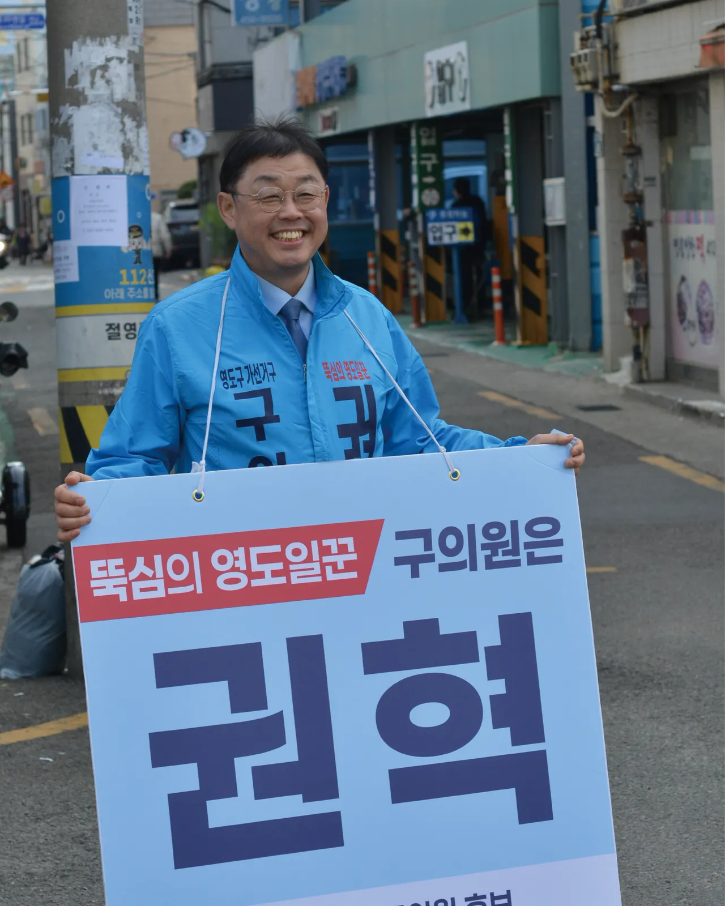
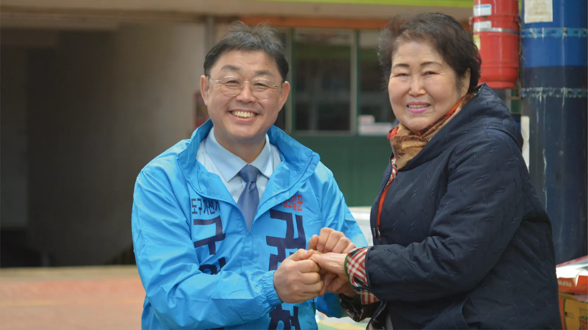
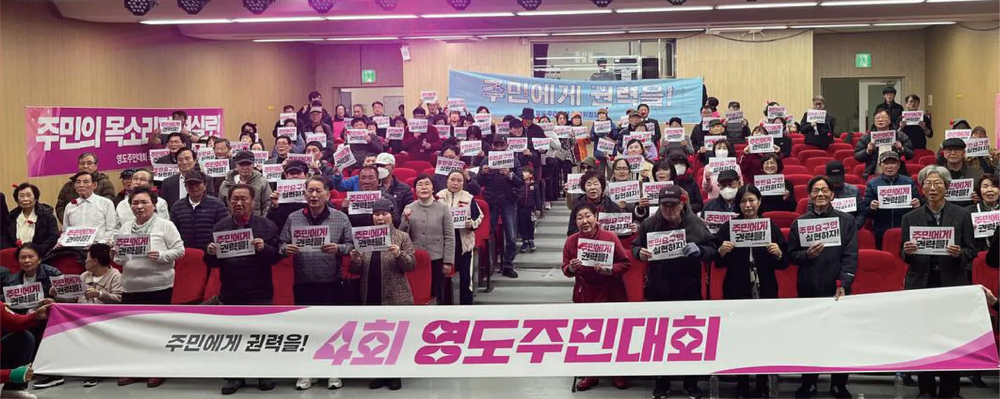
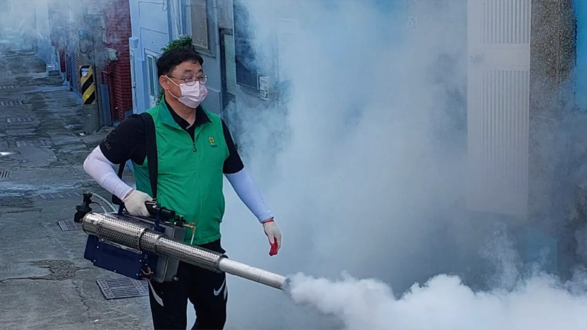
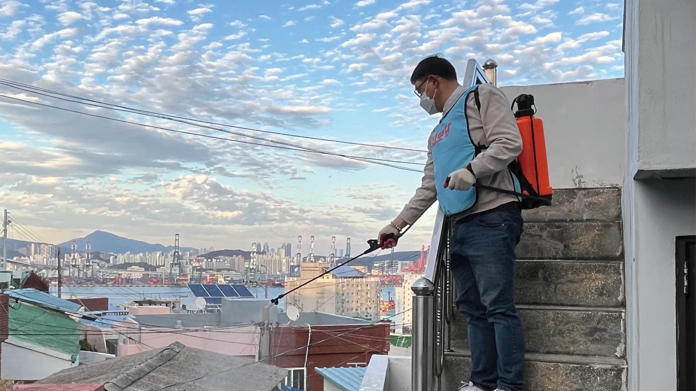
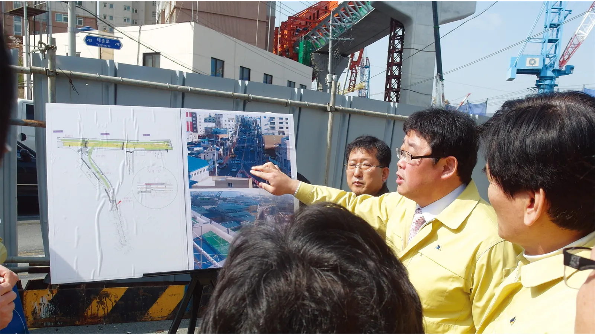

영도구의원 후보 (남항, 신선, 영선, 봉래, 청학)
주민에게 빚져야 주민께 봉사로 갚습니다. 10만원까지는 연말정산 시 전액 돌려받습니다. 영도구 주민의 후원이 간절합니다.
예금주 : 권혁후원회(영도구의원선거) 강대환

진심으로 영도를 위해 일하고 싶습니다.

영도초등학교 73회 졸업
부산남중학교 37회 졸업
광명고등학교 2회 졸업
봉래시장에서 40년 넘게 과일가게를 운영한 충남상회 둘째아들

주민의 힘으로 영도를 바꿔왔습니다.
살기 좋은 영도를 만들기 위해 헌신해 온 사람
내란청산과 새로운 대한민국을 위해 앞장선 광장의 대표 일꾼


안전한 영도를 위해 골목 구석구석 방역통을 메고 다녔습니다.
우리 아이들의 건강한 밥상을 위해 방사능으로부터 안전한 급식조례 제정에 앞장섰습니다.

의정활동 경험과 검증된 실력! 6대 영도구의회 후반기 부의장
영도 부모님의 한결같은 걱정과 불안입니다. 아이들을 학교에 보내고도 마음을 졸이셔야 했던 부모님의 무거운 걱정을 잘 알고 있습니다.
우리 아이들이 마음 놓고 등하교할 수 있는 '안전한 통학로'를 반드시 조성하겠습니다.
지역의 이름을 딴 축제는 그 역사적 현장에서 열릴 때 가장 빛이 납니다.
영도다리 중심의 영도축제가 되어야 합니다.
지하철을 바로 이용할 수 없는 영도에서 어르신 버스비 지원은 어르신들의 교통복지와 이동권 보장, 사회활동을 활성화합니다.
구의원은 주민의 심부름꾼입니다. 항상 발로 뛰며 주민의 목소리를 듣겠습니다.
뚝심 있게! 오직 주민들의 더 나은 삶을 위한 정치를 하겠습니다.
예금주 : 권혁후원회(영도구의원선거) 강대환